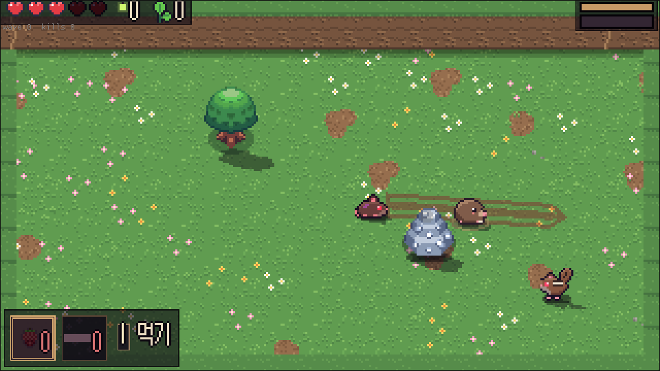
싸움
숨었다가, 솟구쳐서, 세 번
땅속으로 파고들어 공격을 피하고, 솟구치며 들이받은 뒤 발톱 3연타. 세 번째가 가장 묵직하다. 적이 휘두르는 순간에 맞받아치면 튕겨 낸다(패링). 게이지가 차면 화면을 가로지르는 드릴.
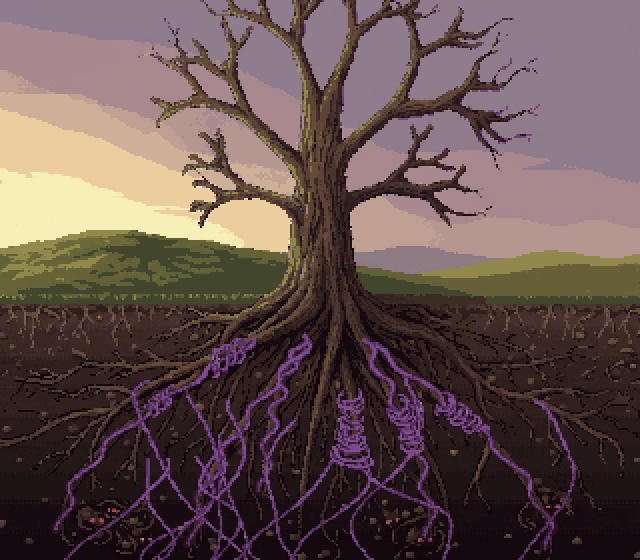
귀여운 탑다운 액션 로그라이트
땅 위의 큰 나무는 올봄 잎을 거의 틔우지 못했다. 그 아래, 뿌리 사이로 낯선 보라색 실이 번져 갔다. 그날은 아기 두더지 나일이 처음으로 혼자 굴을 나서는 날이었다.

싸움
땅속으로 파고들어 공격을 피하고, 솟구치며 들이받은 뒤 발톱 3연타. 세 번째가 가장 묵직하다. 적이 휘두르는 순간에 맞받아치면 튕겨 낸다(패링). 게이지가 차면 화면을 가로지르는 드릴.
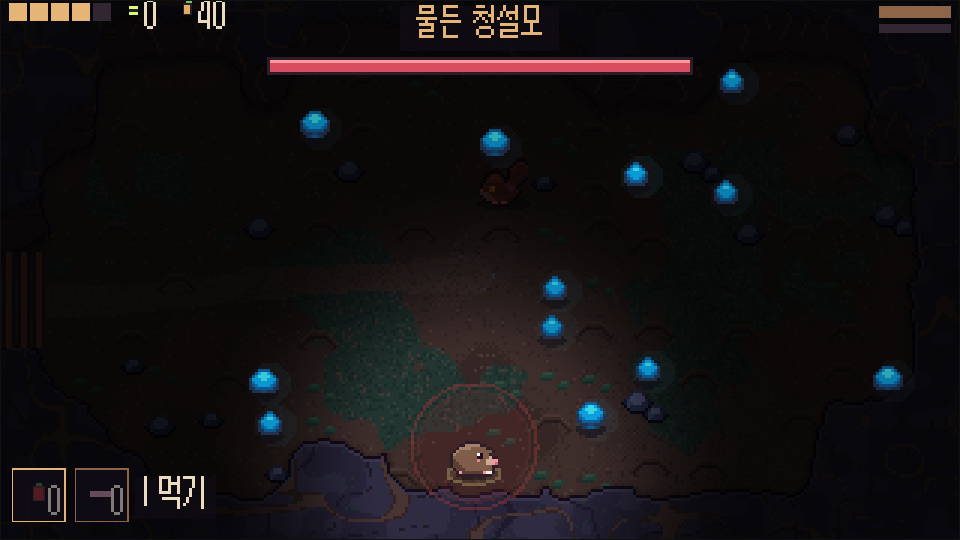
길
쉼터에서 길 지도를 펴고 다음 굴을 고른다. 굴은 매번 새로 파이고, 세 길 끝마다 뿌리에 홀린 이웃이 길을 막고 있다. 쓰러져도 맡긴 반딧불은 남는다.
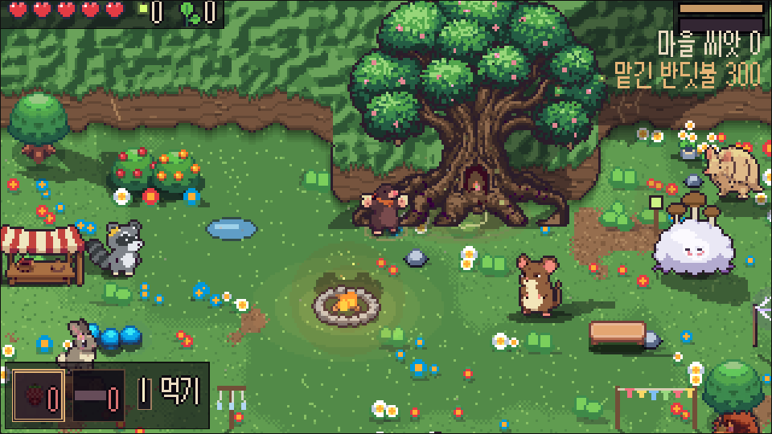
마을
홀렸던 이웃을 깨우면 큰 나무 아래 마을로 돌아온다. 모은 반딧불로 큰 나무의 재주를 깨우고, 씨앗으로 마을을 꾸민다. 깰수록 잎이 돋고, 끝내 꽃이 핀다.
땅속에 사는 이웃들. 몇은 뿌리의 보라색 실에 홀려 있다.
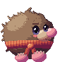
아기 두더지
오늘 처음으로 혼자 굴을 나선다. 발톱과 굴파기가 특기.
라쿤
길잡이이자 쉼터 가게 주인. 씨앗을 받고 물건을 판다.
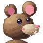
들쥐 대장
들쥐 마을의 늙은 대장. 남쪽 공터를 지키고 있다.
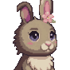
굴토끼
첫 길 끝에서 세 번 만난다. 나중엔 직접 데리고 내려갈 수 있다.
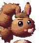
청설모
둘째 길 끝, 뿌리 엉킨 곳. 묻어 둔 것은 아무에게도 안 준다.
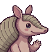
세띠아르마딜로
깊은 곳의 문지기. 아무도 못 지나가게 몸을 만다.
누룩 할매
실을 뜨는 버섯 할매. 실뜨기로 다음 런의 어려움을 고른다.
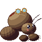
땅강아지 장인
첫 쉼터 그루터기 곁. 새싹 발톱을 만들어 준다.
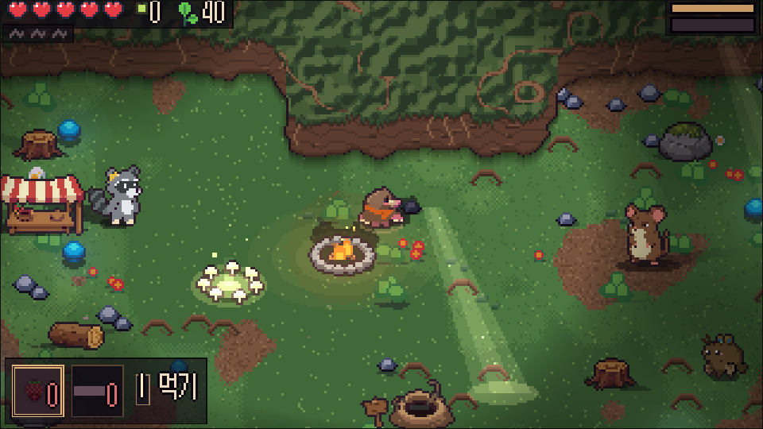
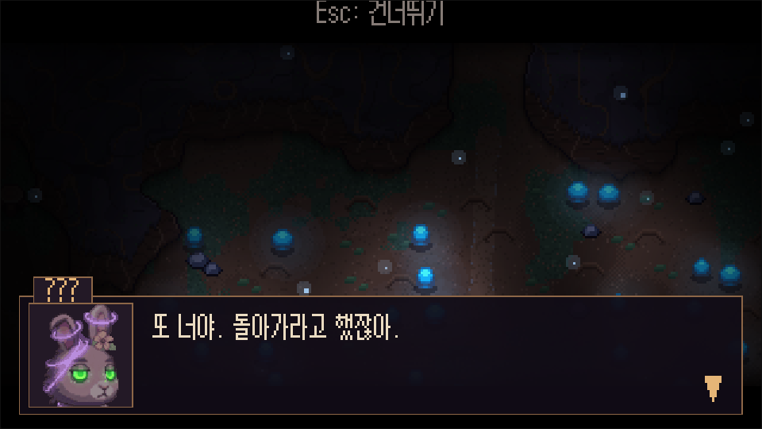
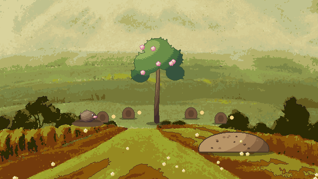
아직 프로토타입(v0.1)이다. 그림은 임시 그림과 Sunnyside World 팩(일러스트 바탕은 저작권이 끝난 옛 그림), 음악은 아직 없다. 기록은 브라우저(웹)나 기기(Android)에 남는다.
nail.apk(arm64)를 받는다.| 동작 | 키보드 | 게임패드 |
|---|---|---|
| 이동 | WASD / 화살표 | 왼쪽 스틱 |
| 공격(3연타) | J | X |
| 굴파기 → 솟구침 | K | A |
| 필살기 | L | B |
| 먹기 / 넘기기 | I / Q·E | Y / LB·RB |
| 메뉴 | Esc | Start |
설정 → 조작 설정에서 바꿀 수 있다.